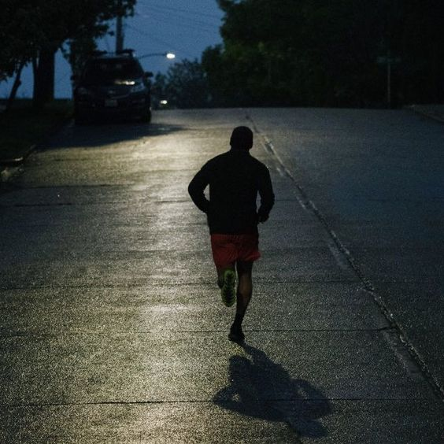
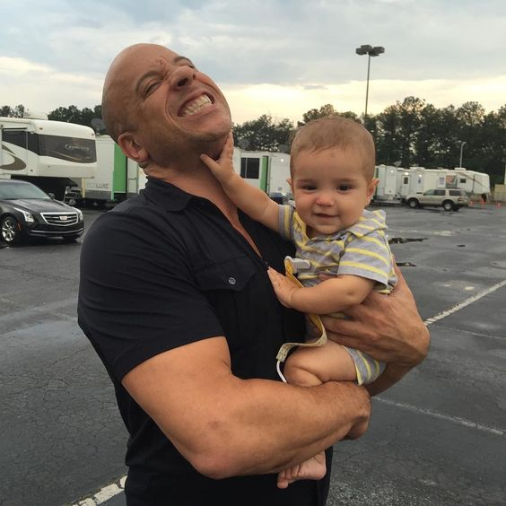

INFORMATIQUE

Passionné par l'informatique, je consacre la majorité de mon temps à élargir mes connaissances dans plusieurs domaines, en particulier celui de la cybersécurité.
LECTURE

La lecture est mon évasion, elle me permet de vivre d'innombrables aventures et de m'enrichir sans bouger de chez moi. Chaque livre est une nouvelle découverte, une source de réflexion et d'émerveillement qui nourrit mon âme.
SPORT
Le sport est ma quête personnelle d'excellence. Il me défie, me revitalise et équilibre mon esprit. C'est dans l'effort que je trouve la force et dans le dépassement, la liberté.
RELIGION

Ma foi est le fondement de mes valeurs et guide mes actions au quotidien. Elle m'apporte paix intérieure et perspective, m'aidant à naviguer les défis de la vie avec grâce et détermination.
ENTREPRENEURIAT
L'entrepreneuriat est ma passion pour l'innovation et la création de valeur. J'aime développer des idées novatrices et les transformer en projets concrets, relevant les défis avec créativité et persévérance.
FAMILLE
Ma famille est mon ancre et ma source d'inspiration. Elle me rappelle ce qui est vraiment important dans la vie et m'encourage constamment à donner le meilleur de moi-même, tant personnellement que professionnellement.